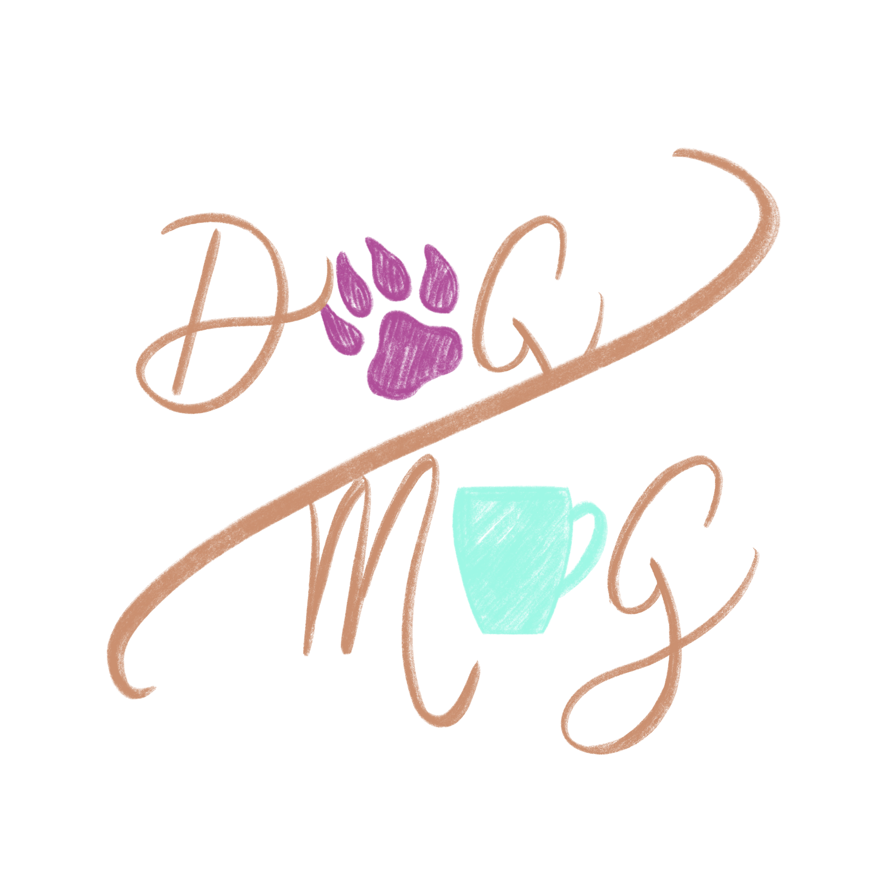
Co je vlastně Dog/Mug? Je to psí kavárna v samém srdci Prahy.
Přijďtě se k nám pomazlit s pejsky a díky spolupráci s několika pražskými útulky
nám pomozte najít těm chlupáčům perfektní domov.
Všichni pejskové, které u nás najdete jsou z právě zmiňovaných útulků,
a proto si je můžete adoptovat i vy.
O nás
Jsme skupina tří studentek milující psy.
A tak jsme se rozhodly založit si vlastní kavárnu s pejsky
a k tomu i trochu pomáhat.
Všechno začalo v roce 2017, kdy nápad vznikl.
O rok později jsme si pronajaly prostory a začaly se zařizováním.
V září 2018 bylo vše hotovo a my byly připraveny otevřít své dveře veřejnosti.
Nejprve jste se u nás mohli setkat jen s našimi vlastními mazlíčky,
ale jak populatita rostla, dohodli jsme spolupráci s nejbližšími útulky
i s firmou Yoggies, jejíž výrobky u nás můžete koupit i dnes.
Měly jsme k dispozici více a více pejsků z různých útulků.
Tak jsme si dali za cíl Vám je co nejvíce přiblížit,
abyste je mohli co nejlépe poznat a zjistit, že i pejskové z útulků,
byť dříve týraní, postižení nebo prostě jen staší
jsou hodni stejné lásky, jako štěňátka z profesionálních chovů.
A i když jsme musely kvůli koronaviru zavřít, děláme to stejně dodnes.
Naši pejskové
Koukněte na fotky našich "zaměstnanců".
Neoficiální majitelé kavárny
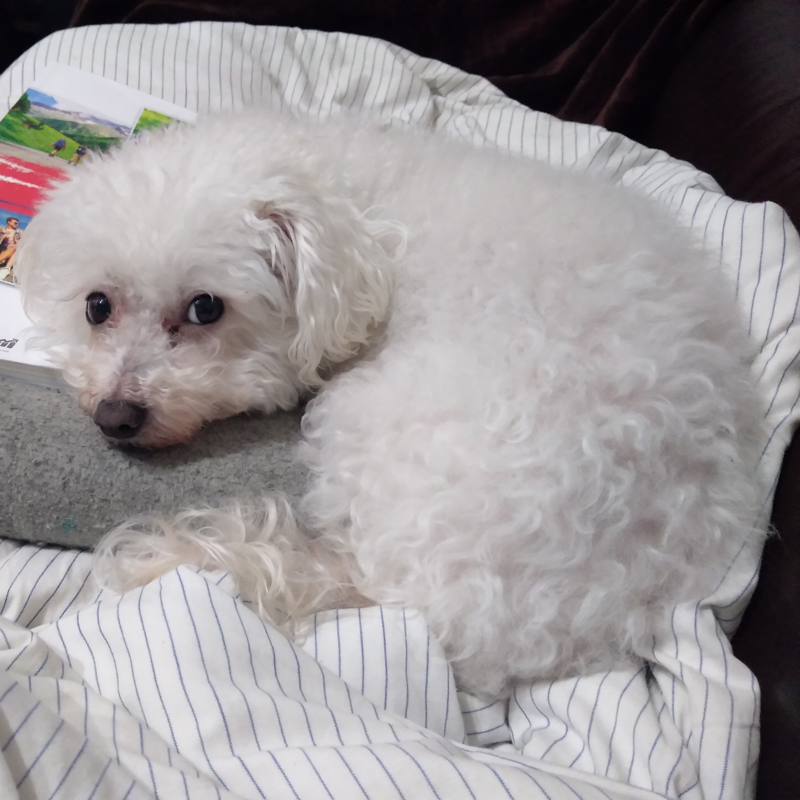
A.k.a. Geralt
Tento bišonek se jménem Dori patří majitelce Niki.
Nejraději má svůj míček, mazlení a spánek.
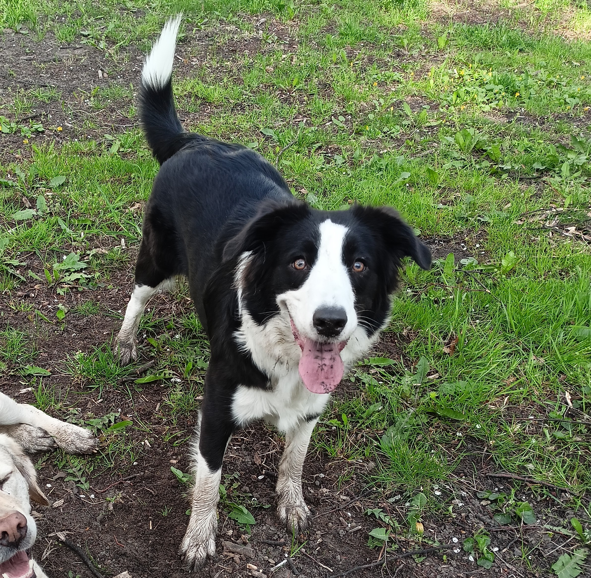
A.k.a. Rarášek
Toto je miláček naší majitely Terky, je to border kolie a jmenuje se Abby. Nikdy není unavená a pořád si chce hrát

A.k.a. Největší střeštiprdla
Majitelkou těchto dvou italských chrtů je Jolča. Nejraději mají válení se v dece na sluníčku, procházky a dostávání pamlsků
Pejsci k adopci
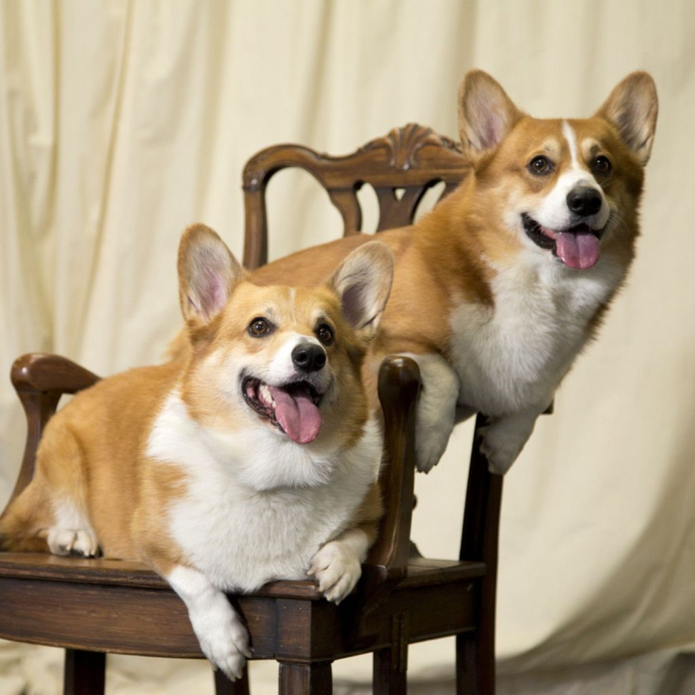
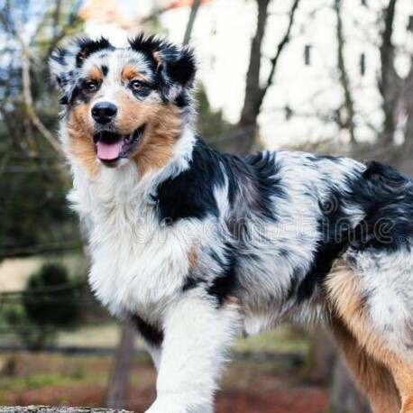
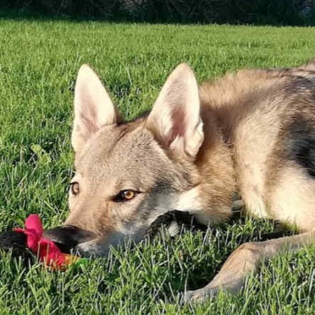
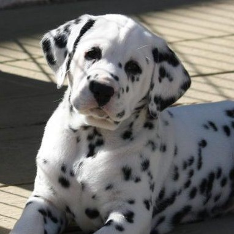
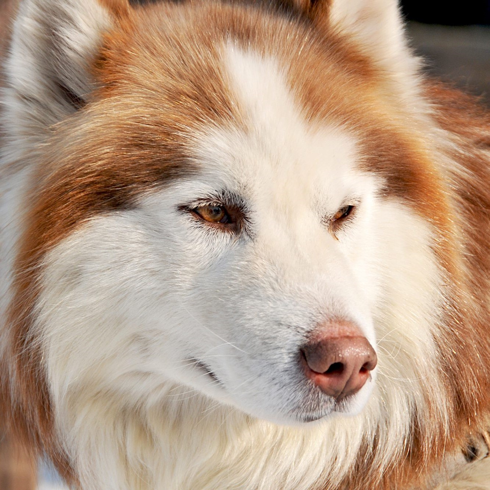
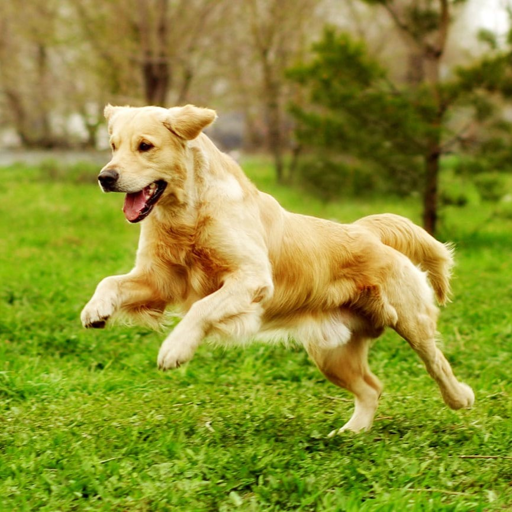
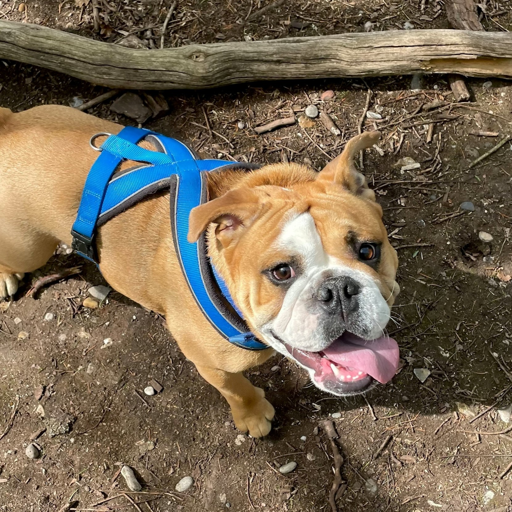
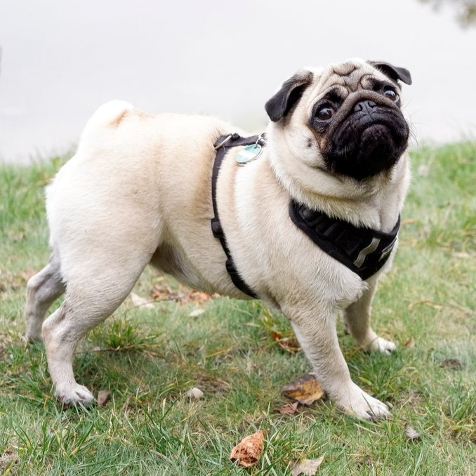
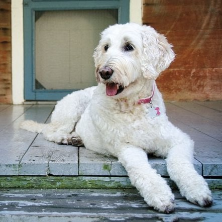
{kind=link}
{kind=link}
{kind=link}
{kind=link}
{kind=link}
{kind=link}
{kind=link}
{kind=link}
{kind=link}
{kind=link}
{kind=link}